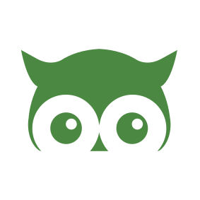
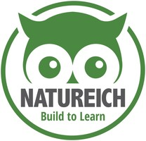
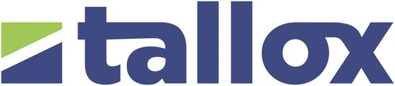
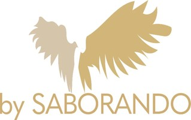
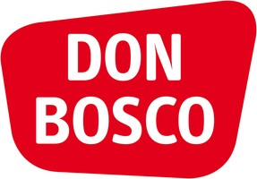
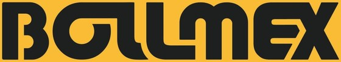
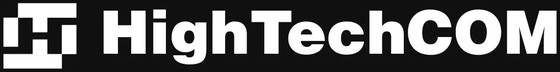

Klarheit vor Aktivität
Wir priorisieren zuerst. So investiert das Team Zeit und Budget dort, wo der größte Nutzen zu erwarten ist.
growald unterstützt E-Commerce-Unternehmen dort, wo Produkt, Supply Chain, Amazon, Content und KI ineinandergreifen.

Mario Moosbauer kennt E-Commerce aus eigener operativer Verantwortung und aus der Zusammenarbeit mit Consumer Brands, die Produkte entwickeln, auf Amazon wachsen und ihre Prozesse skalierbar aufstellen wollen.
Die Erfahrung reicht von Produktfindung, Sourcing und Lieferantensteuerung über Amazon PPC, Listings, SEO und Content bis zu Automatisierung und KI-gestützten Workflows. Dadurch betrachtet growald nicht nur einzelne Kampagnen, sondern den Business Case und das System dahinter.
Mehr als 15 betreute Brands, über 200 gelaunchte Produkte, über 4 Mio. € Umsatz mit eigenen Marken und über 100 Mio. € Umsatz bei den von uns betreuten Marken bilden die operative Grundlage. Die Zusammenarbeit bleibt direkt: klare Prioritäten, nachvollziehbare Entscheidungen und Umsetzung ohne unnötige Komplexität.

Natureich ist eine eigene Amazon-FBA-Marke für non-digitales Lernspielzeug aus Holz. Produktideen, Herstellerkommunikation, Samples, Materialien, Verpackung, CE-Zertifizierung, Qualitätskontrolle, Amazon-Listings und PPC werden nicht von außen beobachtet, sondern operativ verantwortet.
Diese Erfahrung verändert die Beratung: Eine Produktidee muss Nachfrage, Differenzierung, Marge, Qualität und Compliance gleichzeitig tragen. Wenn der Business Case nicht belastbar ist, sagen wir das klar.
Professionalität zeigt sich nicht in möglichst vielen Folien, sondern in klaren Entscheidungen, transparenter Arbeit und verlässlicher Umsetzung.
Wir priorisieren zuerst. So investiert das Team Zeit und Budget dort, wo der größte Nutzen zu erwarten ist.
Annahmen werden als Annahmen benannt. Entscheidungen stützen sich auf verfügbare Daten und nachvollziehbare Kriterien.
KI unterstützt Menschen. Kritische Entscheidungen und externe Aktionen behalten menschliche Kontrolle.
Sie sprechen mit der Person, die Ihre Situation analysiert und die Umsetzung begleitet.
Prioritäten, Ergebnisse und offene Punkte werden transparent festgehalten und gemeinsam besprochen.
Projekte sollen nicht nur kurzfristig Leistung liefern, sondern Prozesse und Wissen im Unternehmen verbessern.
growald baut KI dort ein, wo Branchenwissen, saubere Prozesse und echte Ausgangsdaten vorhanden sind. Das schafft die Grundlage für sichere, messbare Lösungen statt austauschbarer Chatbot-Demos.
KI-Projekte beginnen bei konkreten E-Commerce-Prozessen, nicht bei einer allgemeinen Tool-Demo.
Zeitgewinn, Qualität, Kosten und Fehlerquote werden vor und nach einem Pilot vergleichbar gemacht.
Datenschutz, menschliche Aufsicht, Tests, Protokollierung und Eskalationswege gehören zur Lösung.
Zwei eigene Amazon-Marken und laufende Betreuung von Consumer Brands und Industrieunternehmen — die Beratung stammt aus derselben operativen Arbeit.

9× Umsatzwachstum
Amazon-FBA-Marke für Lernspielzeug aus Holz. Produktentwicklung, Sourcing, CE-Zertifizierung, Listings und PPC vollständig in eigener Verantwortung.
Website ansehen
10× UmsatzwachstumROAS 6 konstant
Sägeketten und Führungsschienen in Profi-Qualität, rund 3 Mio. € Jahresumsatz. Komplettes Amazon-Ads-Management und Produktoptimierung. Dazu haben wir den Shopify-Shop aufgebaut und betreuen Google Ads.
Website ansehen
3,5× Umsatzwachstum2× Conversion
Koreanische Hautpflege — Gesichtsmasken, Seren und Augenpflege für den DACH-Markt. Amazon-Ads-Management, Produktoptimierung und Case-Management.
Website ansehen
10 % ACoS2.500+ Produkte
Kinderbücher und Kamishibai-Erzähltheater. Komplettes Amazon-Accountmanagement für einen sehr großen Werbeaccount, dazu Case-Management und die Begleitung beim Umzug von Vendor Central nach Seller Central.
Website ansehen2× Umsatz in 2 Monaten
Premium-Nassfutter für Hunde und Katzen. Komplettes Accountmanagement inklusive PPC, Case-Management und Flatfile-Pflege.
Website ansehen2× Umsatzwachstum
Schmuck und personalisierbare Accessoires aus München. Amazon-Ads-Management und laufende Strategieberatung für den Marktplatz-Kanal.
Website ansehen
Amazon-FBA-Marke für Rasenmähermesser für Mähroboter. Zweite eigene Marke im Aufbau — Sortiment, Listings und Werbung aus erster Hand.

Antriebssysteme und STM32-Motorcontroller-Engineering aus München. Wir haben den Shopify-Shop aufgebaut und unterstützen bei SEO-Landingpages, Google Ads und Neukundengewinnung.
Website ansehenWeinmarke aus einer Pfälzer Winzerfamilie, die Geschmack in Farbcodes übersetzt (Dachmarke TAM WINE). Amazon-Ads-Management.
Website ansehenWeitere betreute Marken auf Anfrage. Die Nennung erfolgt jeweils in Abstimmung mit den genannten Unternehmen.
Die kostenlose Analyse ist der schnellste Weg zu einer ehrlichen Einschätzung und klaren nächsten Schritten.